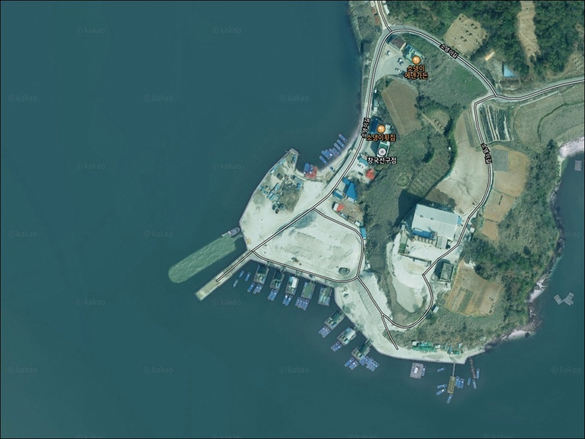
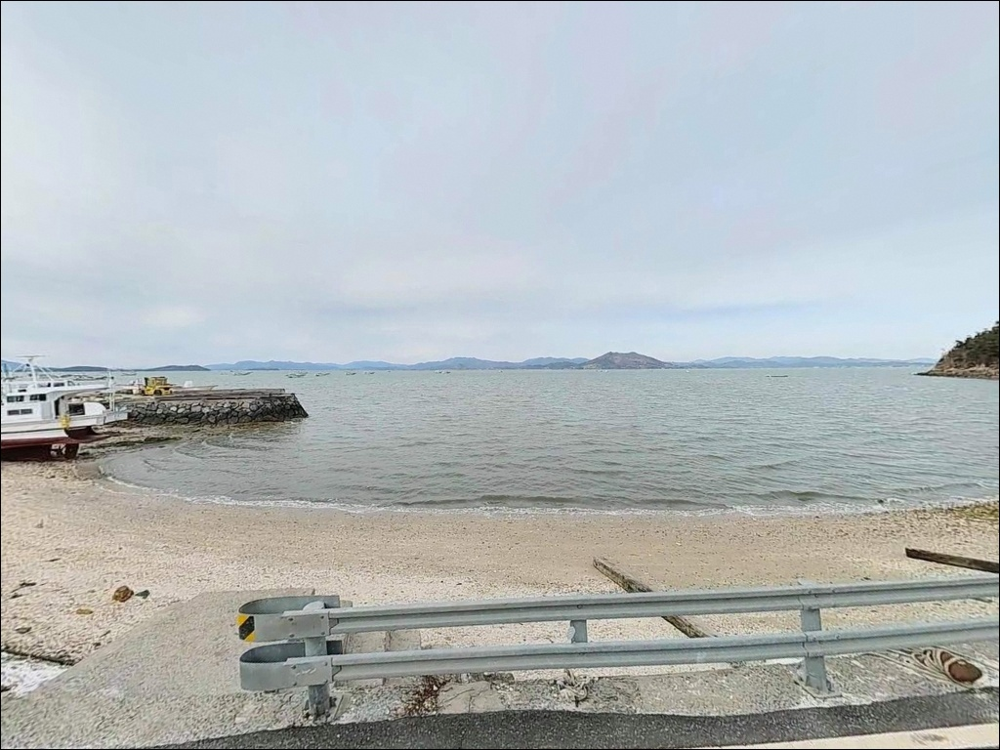
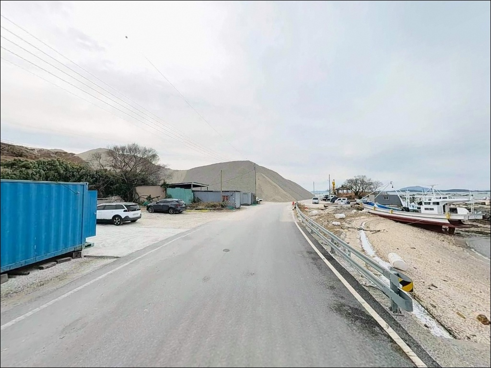
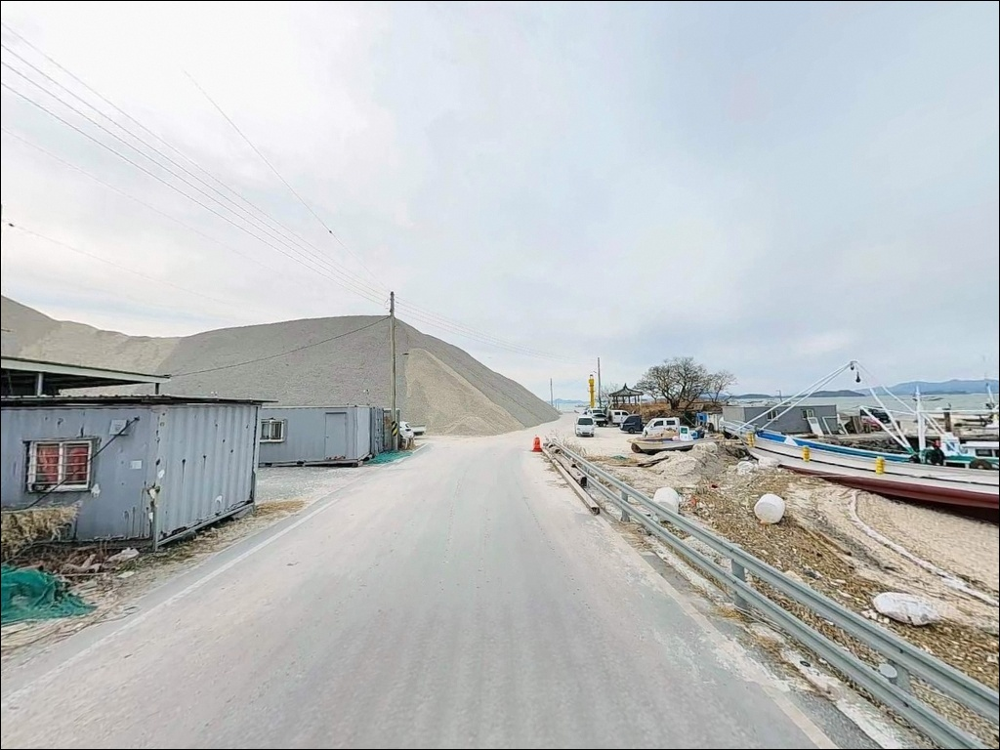
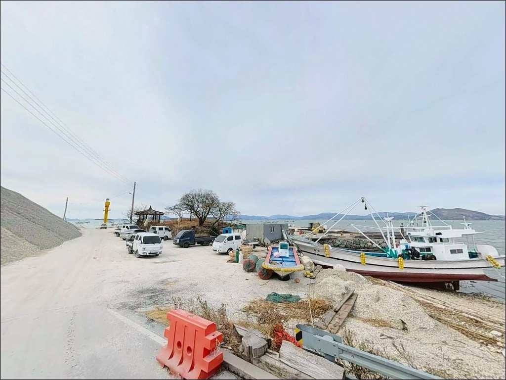
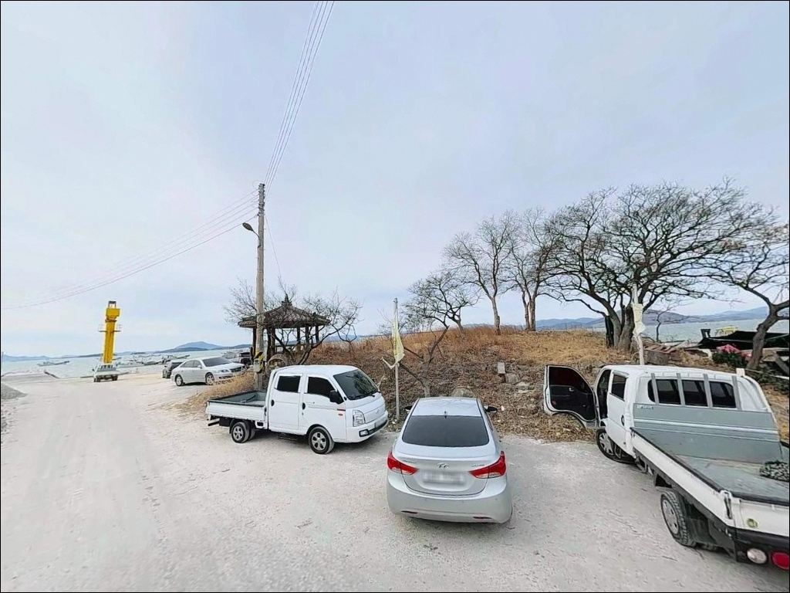
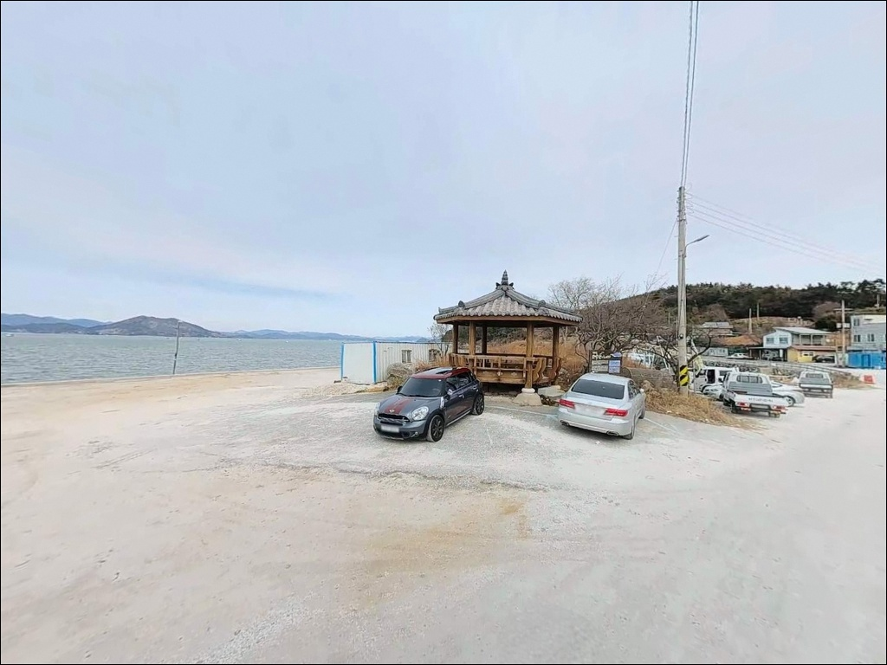
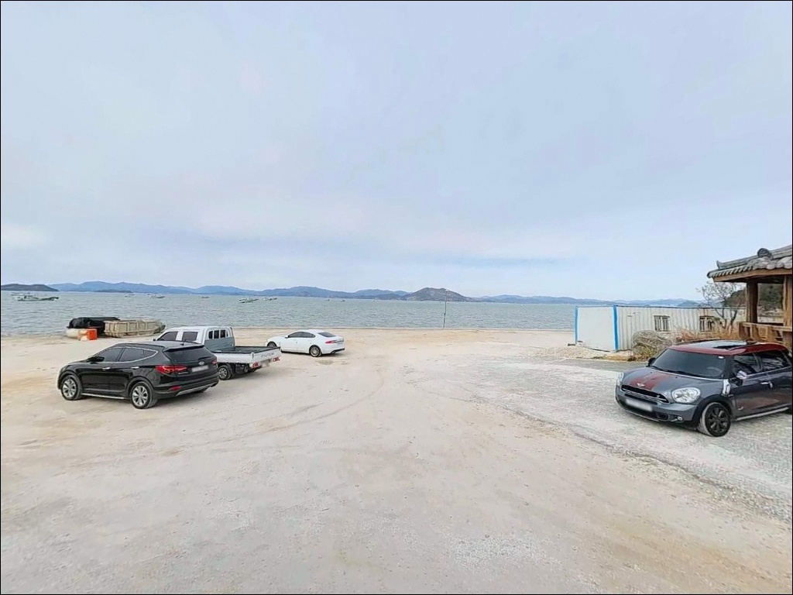
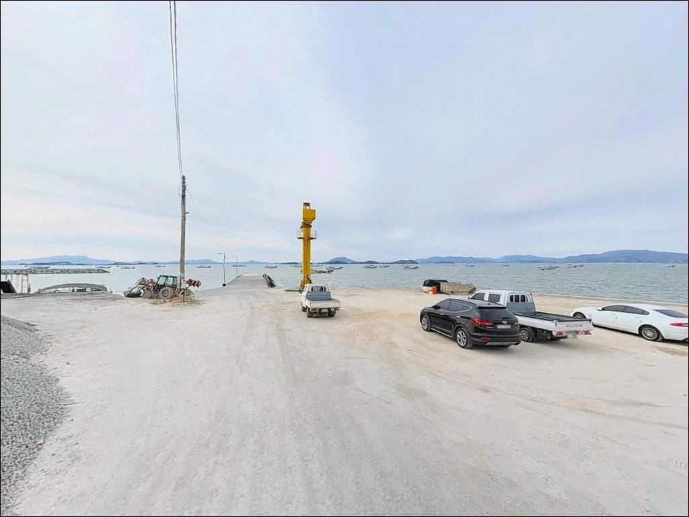

물때 전환 시점 30분에 입질 몰리는 여수 봉전선착장 원투낚시
이 페이지에는 광고(제휴 링크 포함)가 있으며, 광고 링크를 통해 구매하면 운영자가 판매 수익 또는 수수료를 받을 수 있습니다. 포인트 사진: 카카오맵 스카이뷰·로드뷰. 이 페이지의 지도·사진 이미지는 카카오맵의 실제 서비스 이미지와 다를 수 있습니다.


포인트 안내
봉전선착장
전남 여수시 율촌면 봉전리 818-2
여자만 내만에서 원투낚시로 접근하는 포인트는
물때를 모르고 들어가면 조류 흐름이 죽은 시간대에
채비만 바닥에 눕히고 끝나는 경우가 많습니다.
봉전선착장은 외해 직접 노출이 없는
완만한 내만형 구조라 파도 걱정은 없지만,
들물·날물 방향 계산이 조과 차이를 만드는 포인트입니다.
전남 여수시 율촌면 봉전리,
여자만 안쪽 율촌반도 서안에 자리한 봉전선착장은
어촌정주어항으로 국가 공식 지정된 소형 항구입니다.
방파제 두 기가 만구를 좁히는 구조로
내항과 외항이 구분되는 완비된 포인트이며,
원투낚시부터 찌낚시, 라이트 루어까지
복수 방식으로 접근이 가능합니다.
이 글은
봉전선착장의 진입 동선, 차박 여건,
물때 판단 기준, 낚시 스타일별 공략 조건에 집중합니다.
조황 단정이나 특정 어종 보장은
이 글의 범위에 포함되지 않습니다.

1. 진입 동선과 포인트 접근성
봉전선착장으로 향하는 주요 경로는
863번 지방도(죽림~봉전 방향)를 타고
봉전리 마을로 진입하는 방식입니다.
지방도 구간은 2차선이지만
선형이 구불구불해
속도를 낮추고 이동하는 편이 안전합니다.
율촌면소재지에서 봉전리까지 이어지는
내부 마을도로는 농어촌 수준으로
폭이 좁은 구간이 포함됩니다.
항 자체 진입로는 호안도로가 포장되어 있어
승용차 기준 접근은 무리 없는 편이지만,
대형 SUV나 캠핑카라면
곡선 구간 교행 여부를 사전에 파악하고 출발하는 편이 좋습니다.
선착장 인근에는 어선 하역용 공간이 형성되어 있어
소형 차량 회차는 가능한 구조입니다.
주차는 호안도로 인접 평탄지,
방파제 시작점 공터, 마을 진입로 확장 구간
세 곳을 후보로 보면 됩니다.

2. 차박 환경과 야간 체류 여건
봉전마을은 봉전항과 바로 붙어 있는
전형적인 어촌 생활권 구조입니다.
야간 통행량은 거의 없는 편이지만,
민가 밀집도가 높은 만큼
완전한 정숙 차박 환경을 기대하기는 어렵습니다.
마을 가로등이 일부 존재해
완전 암흑 상태는 아닙니다.
차박 자리는 방파제 입구 평탄지나
호안도로 인접 공간을 활용하는 방식이 일반적입니다.
여자만 내만이라 파도 소음은 거의 없는 편이며,
바람 방향에 따라 체감 환경이 달라지므로
바람 예보는 출발 전 당일 확인이 기본입니다.
마을과 인접한 생활권 포인트인 만큼
야간 엔진 소음, 조명 방향, 쓰레기 관리에
각별히 신경 쓰는 것이
다음 방문자를 위해서도 필요한 매너입니다.


3. 주변 편의시설 및 인프라 현황
봉전리 일대는 소규모 농어촌 마을 구조로,
선착장 반경 3km 이내에서
편의점이나 마트를 기대하기 어렵습니다.
율촌면소재지(조화리)까지 약 7~9km,
여수 시내 방면으로는 약 15~20km 이동이 필요합니다.
식수·얼음·낚시 소품은 출발 전 완비하는 것이
현실적인 준비 방식입니다.
반경 3km 안쪽으로는
여자만을 바라보는 와온해변이 위치해 있습니다.
일몰 명소로 알려진 곳으로
출조 전후로 들르기에 동선상 무리 없는 거리입니다.
응급 상황 대비를 위한 병원·대형 인프라는
여수공항 방면 10km권을 참고하면 됩니다.

4. 물때 모르고 가면 손해 보는 이유
봉전선착장 방문 전 가장 먼저 확인할 것은
물때입니다.
여자만은 반폐쇄형 만 구조로
조석차가 큰 편이며,
밀물·썰물 흐름이 뚜렷하게 형성되는 수역입니다.
들물·날물 방향이 전환되는 타이밍 전후가
핵심 입질 시간대이며,
바다타임에서 봉전리 기준 물때를
사전에 확인하고 출발 시각을 맞추는 것이 기본입니다.
원투낚시를 메인으로 한다면
만조 전후 물이 차오르는 시점에
외항 방향으로 투척하는 패턴이 이 지형과 잘 맞습니다.
간조 시에는 선착장 주변 바닥이 드러나는 구간이
발생하므로 채비 착수 지점을 달리해야 합니다.
기상 변화가 갑작스러울 수 있으므로
출조 당일 기상청 예보를 다시 한번 확인하는 것이
헛걸음을 막는 조건입니다.
내만이지만 강풍 발생 시 방파제 끝단은
위험 구간이 될 수 있으며,
구명조끼 착용은 장소와 시간을 가리지 않고 기본입니다.

5. 지형 기반 낚시 여건 분석
봉전선착장의 지형적 핵심은
두 기의 방파제가 만구를 좁히는 구조입니다.
제1방파제(97m)와 제2방파제(137m)가
내항을 보호하는 형태로 배치되어 있고,
외항 방향은 여자만 본만으로 직접 노출됩니다.
방파제 끝단 외항 쪽이 수심이 가장 깊고
조류 흐름도 살아나는 자리입니다.
내항 쪽은 어선 정박 목적 구조로 수심이 얕은 편이며,
바닥은 펄과 모래가 혼재하는 사니질입니다.
이 바닥 구조는 원투낚시로 바닥 어종을 노리기에
적합한 조건을 갖추고 있습니다.
선착장 벽면 쪽은 요철이 적은 편이라
찌낚시와 민장대 운용도 가능한 구조입니다.
여자만 수계에서 기대해 볼 수 있는 어종은
볼락, 우럭, 붕장어, 숭어, 망둥어를 중심으로
계절에 따라 유입 패턴이 달라지는 편입니다.
가을~초겨울 시즌에는 방파제 외항 쪽에서
감성돔 찌낚시 가능성이 있는 지형 조건을 갖추고 있습니다.
최신 조황은 출조 전에 반드시 검색해 보시기 바랍니다.


6. 봉전선착장에 어울리는 낚시 스타일
이 포인트에서 가장 잘 맞는 낚시는
원투낚시입니다.
방파제 외항 방향으로 30~60m 캐스팅이 가능하고,
사니질 바닥이 바닥 어종 공략에 유리한 구조입니다.
청갯지렁이·홍갯지렁이 미끼에
천평채비 또는 투바늘 채비가 이 지형의 표준이며,
야간 붕장어 포인트로도 활용할 수 있습니다.
찌낚시는 방파제 끝단 외항 측에서
들물·날물 전환 시점을 노리는 방식으로 운용합니다.
내만형이라 흐름이 조용한 시간대가 많지만,
물때가 맞으면 조류가 살아나는 구간이 생깁니다.
조류 방향이 바뀌기 직전 30분을 집중적으로 공략하는 것이
이 포인트 찌낚시의 핵심입니다.
라이트 루어는 방파제 끝단과 호안도로 기저부를
소형 지그헤드 리그로 탐색하는 방식이 어울립니다.
가을철 수온이 올라오는 시기에는
새벽·해질녘 시간대에 활성도가 높아지는 편입니다.
여자만 내만 특성상 외해 개방형 방파제 대비
어종 다양성은 제한적이지만,
야간 라이트게임으로 볼락과 우럭을 노리는 패턴은
이 지형에서 시도해 볼 만한 스타일입니다.

7. 대안 포인트와 플랜 B 동선
봉전선착장 조건이 여의치 않을 때
가장 먼저 이동할 대안은
와온선착장입니다.
차량으로 약 5분 거리이며,
규모가 더 크고 편의시설 접근성이 좋은 편입니다.
동일 여자만 해역이라 어종 패턴도
크게 다르지 않습니다.
여자만 해안선을 따라 북쪽으로 이동하면
율촌면 동일 해역의 조화리 선착장 일대가 있습니다.
봉전항과 유사한 내만 조건을 공유하는 구간으로,
바람 방향이나 주차 여건이
봉전보다 낫게 느껴질 때 대안으로 쓸 수 있습니다.
차박 대안으로는
와온해변 주차장이 적합합니다.
화장실이 갖춰져 있고 여자만 일몰 조망이 뛰어난 곳으로,
낚시보다 체류 환경 중심으로 움직이는 분께
봉전선착장보다 편한 공간이 될 수 있습니다.

여자만 내만에서 조용히 즐기는
봉전선착장의 조건
원투낚시로 바닥을 노리거나
방파제 끝단에서 찌를 띄워보고 싶은 낚시인이라면
봉전선착장 구조는 잘 맞는 편입니다.
외해 직접 노출이 없어
파도 걱정 없이 자리를 잡을 수 있고,
방파제 두 기가 있어 내항·외항을
조건에 따라 선택할 수 있습니다.
다만 편의시설이 가까이 없는 구조라
완전 자급 체제로 들어가야 하는 포인트입니다.
마을과 인접한 생활권 포인트이므로
야간 차박 시 소음과 쓰레기 관리는
기본 매너입니다.
물때 확인, 진입로 사전 파악, 자급 준비,
이 세 가지를 갖추고 가면
한적한 여자만 내만에서
조용한 하룻밤을 보내기에 나쁘지 않은 포인트입니다.
여자만 갯벌 냄새를 맡으며 낚싯대를 드리우고,
낚시를 마친 뒤 차 안에서 조용히 쉬어가는 출조라면
봉전선착장은 충분히 그 역할을 해주는 곳입니다.